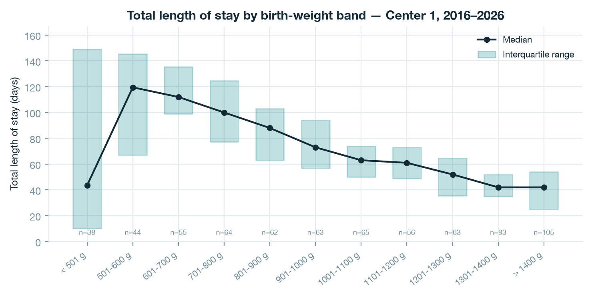
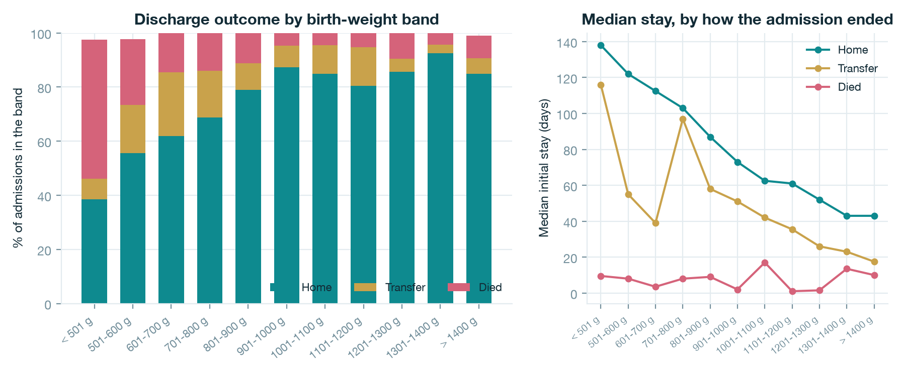
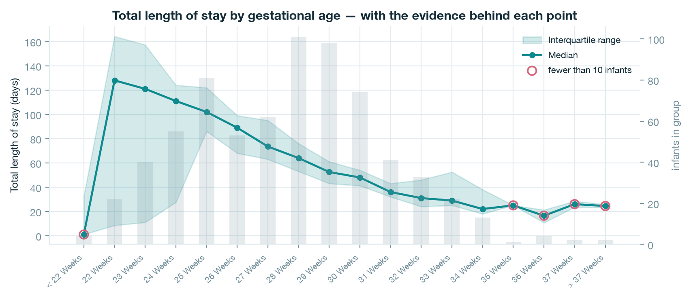
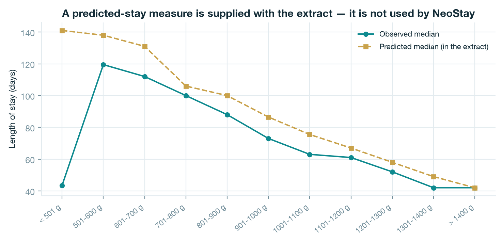
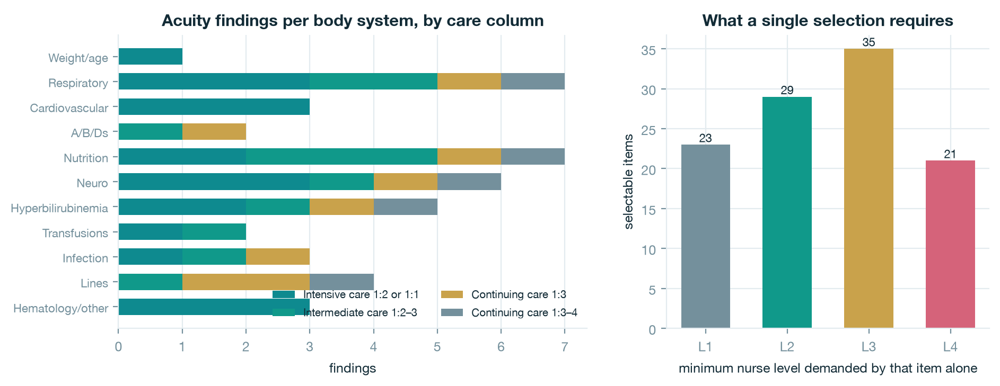

Every dataset the project holds, measured: how the outcome tables are built, whether they agree with themselves, what the length-of-stay and discharge figures show, how the acuity instrument is structured, and exactly which questions these data can and cannot answer.
One page for a busy reader; the detail follows.
Eighteen files, three folders, two bodies of evidence.
The source of truth is small and fully inspectable. Seven CSV files are read by the application; the remainder are the centre's own charts of the same numbers, the scanned original of the acuity instrument, and two local policy documents.
| File | What it contains | Read by |
|---|---|---|
losdata/ …_by-Birth Wgt 10 Levels-survival.csv |
Six measures per birth-weight band: initial length of stay split by discharge outcome (home, transfer, died, all), a predicted length of stay, and total length of stay. N, median, Q1 and Q3 for each. | data_loader.py |
losdata/ …Total Length Of Stay…by-Birth Wgt 10 Levels.csv |
Total length of stay across the same 11 birth-weight bands. | data_loader.py |
losdata/ …Total Length Of Stay…by-GA Week.csv |
Total length of stay across 18 gestational-age groups, from under 22 weeks to over 37 weeks. | data_loader.py |
losdata/ …by-Birth Wgt 10 Levels.csv |
Predicted and total length of stay by band. Every value duplicates a value in the survival file. | not read — duplicate |
losdata/ *.png, *.pdf (8 files) |
The centre's own charts of the tables above, kept for provenance. | not read |
nurse-skills/ page_1…csv, page_2…csv, page_3…csv |
The Abrazo Arrowhead Neonatal Acuity Tool and the Nursing Levels of Care, transcribed from the scan into tables. | acuity_tool.py |
nurse-skills/ Nurse-skills-classifier….pdf |
The original three-page scan, 11 MB. Its handwritten annotations are deliberately ignored. | not read by the program |
nurse-poicies/ Abrazo_Acuity_Tool.docx |
The same acuity tool as a Word document — a second, cleaner copy of the transcription source. | not read |
nurse-poicies/ NICU_Charge_Nurse_Daily_Task_List.docx |
The charge nurse's hour-by-hour duties across the AM and PM shifts. | not read |
All four outcome files describe the same population: very low birth weight infants admitted to Center 1 between 2016 and 2026, summarised as counts, medians and quartiles. There is no row for an individual infant anywhere, no admission date, and no clinical detail beyond birth weight and gestational age.
A wide shape, read into tidy rows, then checked against the application.
Each outcome CSV is a wide table. The first row names the groups — birth-weight bands, or gestational-age weeks — and the second row repeats four sub-columns beneath every group. Each later row is one measure.
| Row | Contents |
|---|---|
| Row 1 | Group labels: < 501 g, 501-600 g … > 1400 g, All — each spanning four columns. |
| Row 2 | N, Median, Q1, Q3, repeated once per group. |
| Row 3+ | One measure per row, for example Total Length Of Stay or Initial Length of Stay (By Disposition) - Died. |
The notebook parses this shape into one tidy row per measure and group — 127 statistics in
all — using its own parser, deliberately independent of the application's loader. It then compares
40 of those rows against backend/app/data_loader.py. They agree exactly, so the figures in this
document and the numbers the application shows come from the same reading of the same files.
Four checks, run over every published statistic.
| Check | Scope | Result |
|---|---|---|
| Every expected group present | 11 weight bands or 18 gestational-age groups, in every measure of every file | pass no gaps |
| Q1 ≤ median ≤ Q3 | All 127 statistics | pass 0 violations |
Band counts sum to the All column | 10 measure/file combinations | pass 10 of 10 |
| Values repeated across files agree | 24 measure/group pairs published in two files | pass 0 disagreements |
Structurally the tables are clean. The substantive finding is elsewhere: the measures do not share a denominator.
| Measure | Infants | Difference from the disposition total |
|---|---|---|
| Initial length of stay — discharged home | 553 | 77.7% of all admissions |
| Initial length of stay — transferred | 73 | 10.3% |
| Initial length of stay — died | 83 | 11.7% |
| Sum of the three outcomes | 709 | — |
Disposition total (the All row) | 712 | 3 admissions carry no discharge outcome |
| Total length of stay | 708 | 4 fewer than the disposition total |
| Predicted length of stay | 618 | 94 fewer — a visibly smaller group |
The missing values are also unevenly spread: the three unattributed admissions fall in the
< 501 g, 501-600 g and > 1400 g bands, one each. That pattern
is consistent with infants still admitted when the extract was taken, but the files do not say so, and it
is a question worth putting to the centre.
The gradient the application's forecast rests on.

| Band | Infants | Median | Q1 | Q3 | IQR width |
|---|---|---|---|---|---|
| < 501 g | 38 | 43.5 | 10.0 | 149.0 | 139.0 |
| 501–600 g | 44 | 119.5 | 67.0 | 145.3 | 78.3 |
| 601–700 g | 55 | 112.0 | 99.0 | 135.5 | 36.5 |
| 701–800 g | 64 | 100.0 | 77.3 | 124.8 | 47.5 |
| 801–900 g | 62 | 88.0 | 63.0 | 103.0 | 40.0 |
| 901–1000 g | 63 | 73.0 | 57.0 | 94.0 | 37.0 |
| 1001–1100 g | 65 | 63.0 | 50.0 | 74.0 | 24.0 |
| 1101–1200 g | 56 | 61.0 | 48.8 | 73.0 | 24.3 |
| 1201–1300 g | 63 | 52.0 | 35.5 | 64.5 | 29.0 |
| 1301–1400 g | 93 | 42.0 | 35.0 | 52.0 | 17.0 |
| > 1400 g | 105 | 42.0 | 25.0 | 54.0 | 29.0 |
| All | 708 | 60.0 | 40.0 | 95.0 | 55.0 |
Three readings matter:
Three different processes behind one length of stay.

| Band | Home | Transfer | Died | All | Home % | Died % |
|---|---|---|---|---|---|---|
| < 501 g | 15 | 3 | 20 | 39 | 38.5 | 51.3 |
| 501–600 g | 25 | 8 | 11 | 45 | 55.6 | 24.4 |
| 601–700 g | 34 | 13 | 8 | 55 | 61.8 | 14.5 |
| 701–800 g | 44 | 11 | 9 | 64 | 68.8 | 14.1 |
| 801–900 g | 49 | 6 | 7 | 62 | 79.0 | 11.3 |
| 901–1000 g | 55 | 5 | 3 | 63 | 87.3 | 4.8 |
| 1001–1100 g | 56 | 7 | 3 | 66 | 84.8 | 4.5 |
| 1101–1200 g | 45 | 8 | 3 | 56 | 80.4 | 5.4 |
| 1201–1300 g | 54 | 3 | 6 | 63 | 85.7 | 9.5 |
| 1301–1400 g | 86 | 3 | 4 | 93 | 92.5 | 4.3 |
| > 1400 g | 90 | 6 | 9 | 106 | 84.9 | 8.5 |
| All | 553 | 73 | 83 | 712 | 77.7 | 11.7 |
Mortality is concentrated at the smallest sizes. Half of the admissions under 501 g did not survive, against roughly one in twenty from 901 g upward. Because a death usually ends an admission early — the median stay for infants who died is 6 days, against 63 days for those discharged home — the smallest band's apparently short stay is a survival effect, not a clinical one.
Above 901 g the remaining variation in mortality (4.3% to 9.5%) rests on three to nine deaths per band. Those counts are too small to read as a trend, and the figure should not be used to rank bands against one another in that range.
The same message, with much thinner tails.

The gestational-age view carries the same gradient as the weight view — each additional week before birth shortens the expected stay — but its ends are thin. Five groups hold fewer than ten infants:
| Group | Infants | Median stay | Reading |
|---|---|---|---|
| < 22 weeks | 4 | 1.0 | Four infants; almost all die within a day. |
| 35 weeks | 1 | 25.0 | A single infant. No spread can be estimated. |
| 36 weeks | 4 | 16.5 | Growth-restricted infants; very low birth weight at 36 weeks is unusual. |
| 37 weeks | 2 | 26.0 | Two infants. |
| > 37 weeks | 2 | 24.5 | Two infants. |
The evidence sits in the middle of the distribution: 28 weeks (101 infants), 30 weeks (98), 29 weeks (98) and 25 weeks (81). The application's confidence grade is driven by exactly this count, so a thin group is reported as low-confidence rather than hidden.
A measure the files carry, which the application does not use.

Alongside the observed figures, the extract carries a measure named Predicted Length of Stay. Its method is not documented in the files. Three observations:
< 501 g band it gives 141
days against an observed 43.5 — consistent with a measure that projects the stay of a surviving infant and
therefore excludes early deaths.A policy, not a sample — and what can still be measured about it.
The second dataset is the unit's own acuity policy — the Abrazo Arrowhead Neonatal Acuity
Tool and the Nursing Levels of Care — transcribed from a three-page scan into tables and parsed by
backend/app/acuity_tool.py. The scan's handwritten annotations are deliberately ignored.
Two structural facts follow:
| Criteria group | N1 | N2 | N3 | N4 | Total |
|---|---|---|---|---|---|
| General criteria | 4 | 13 | 15 | 13 | 45 |
| Hyperbilirubinemia criteria | 6 | 5 | 4 | 4 | 19 |
| All criteria | 10 | 18 | 19 | 17 | 64 |

Four of eleven questions can be answered today.
| Question | Today | Why |
|---|---|---|
| Expected stay for a group of similar infants | yes | Medians and quartiles per weight band and per gestational week. |
| Chance of home, transfer or death for a group | yes | Counts per band in the disposition table. |
| How much evidence stands behind an estimate | yes | N is published with every statistic, and drives the confidence grade. |
| Nurse:patient ratio and minimum competency per infant | yes | The acuity instrument is complete and executable. |
| A stay prediction for an individual infant | no | Needs patient-level records (D1). No individual rows exist. |
| Effect of a clinical course on the stay | no | Needs the daily course (D2). Weight and gestation are the only covariates held. |
| Joint effect of weight and gestation | no | The two tables describe the same cohort separately; no cross-tabulation is published. |
| Calibration, discrimination, external validation | no | Needs individual outcomes to compare predictions against. |
| Unit demand over time, seasonality, surges | no | Needs census and flow (D4). The files hold no dates. |
| Whether the acuity tool matches real nursing effort | no | Needs acuity per shift (D5) and actual staffing (D6). |
| Rostering real named nurses | no | Needs the workforce list (D6). No staff data is held. |
The pattern is consistent: what the data supports, the application already does — group estimates with honest ranges, outcome mix, evidence counts and acuity-driven staffing. Everything in the "no" column waits on an extract from the hospital, not on development work. The six datasets, their fields and the volumes needed are specified in docs/NeoStay-Data-Requirements.pdf.
One notebook, no hidden steps.
Every number, table and figure in this document is produced by
notebooks/01_dataset_analysis.ipynb, which reads only the files in datasets/ and
writes its figures into docs/analysis/figures/.
| Section | Output |
|---|---|
| 1 · Inventory | Every file in datasets/, its size, and what reads it. |
| 2 · Reading the tables | An independent parser, cross-checked against the application's loader. |
| 3 · Consistency | The four checks in Table 3, and the denominator reconciliation in Table 4. |
| 4–7 · Outcomes | Figures 1 to 4 with the tables behind them. |
| 8 · Acuity instrument | Figure 5, the structure table, and the classification of every item. |
| 9 · Limits | Table 9, generated rather than written by hand. |
| 10 · Provenance | A SHA-256 digest of every source CSV, so a reader can confirm the files have not changed. |